A Hitchhiker's Guide to Monero's Feather Wallet
Feather wallet is an open-source Monero wallet for desktop that is available on most operating systems including Linux, Windows, and Tails.
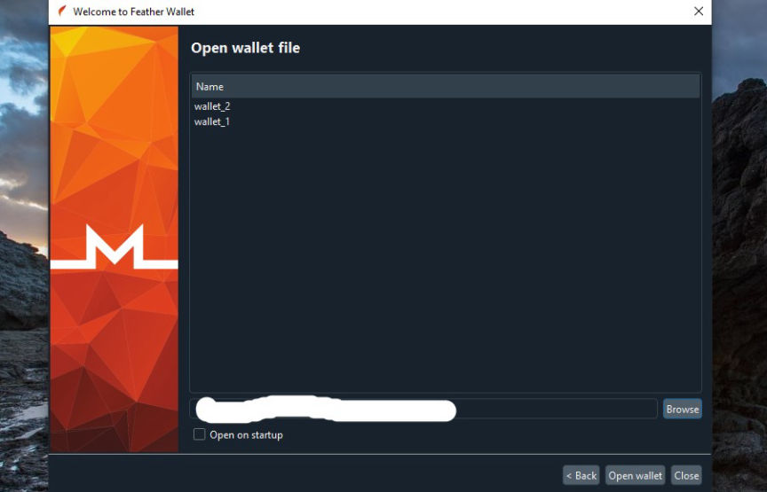
Feather wallet is lightweight and has an easy-to-use layout making it suitable for both beginners and advanced Monero users. Its ease of use makes it the go-to wallet for everyday Monero users.
Some of its features include;
Go to the official download page and download the file of your choice.
This is an optional step but a necessary one for extra security.
Go here and copy the PGP key, and paste it into the Notepad of your Kleopatra. Next, Click on Import Notepad. Certify the PGP key and make sure the fingerprint matches: 8185 E158 A333 30C7 FD61 BC0D 1F76 E155 CEFB A71C.
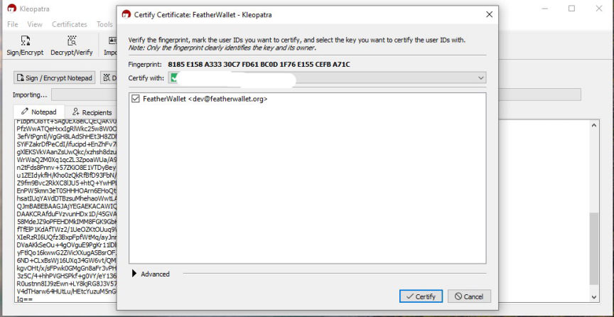
You need to go back to Feather's download page and download the signature of the file you downloaded. Double-click on the signature file after the download completes.
A new window will open on Kleoptra and will confirm whether the signature is valid or not.
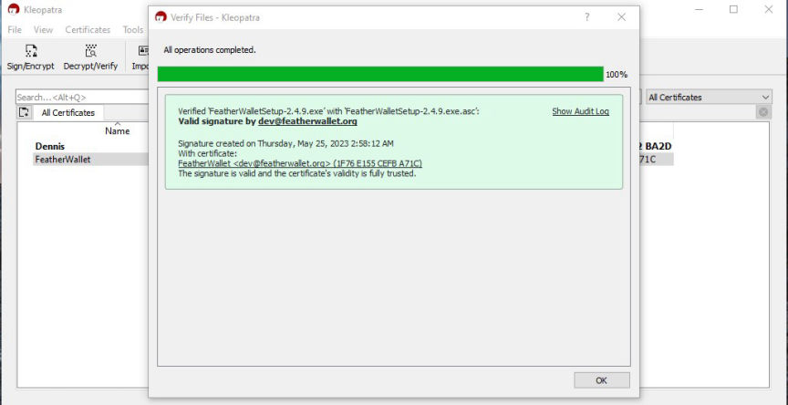
Install the wallet if the signature is valid.
After installing the application, open it, select Create new wallet and click Next.
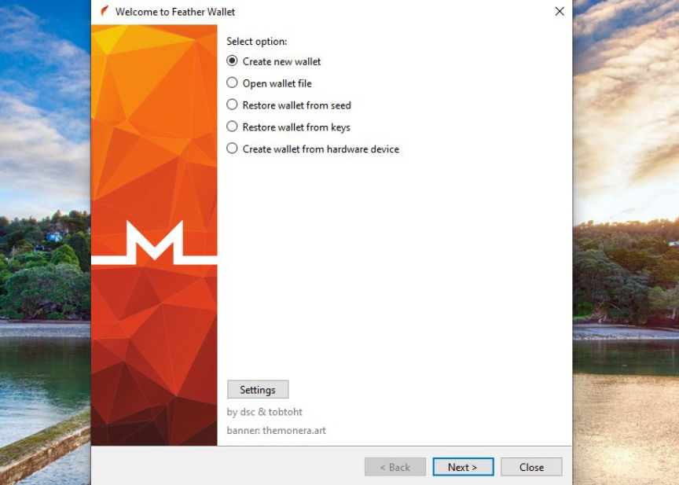
You will be taken to a page that displays the seed phrase for your new wallet. Since this is the only way you can recover your wallet, write the recovery phrase down, confirm the words are in the right order, and store it safely.
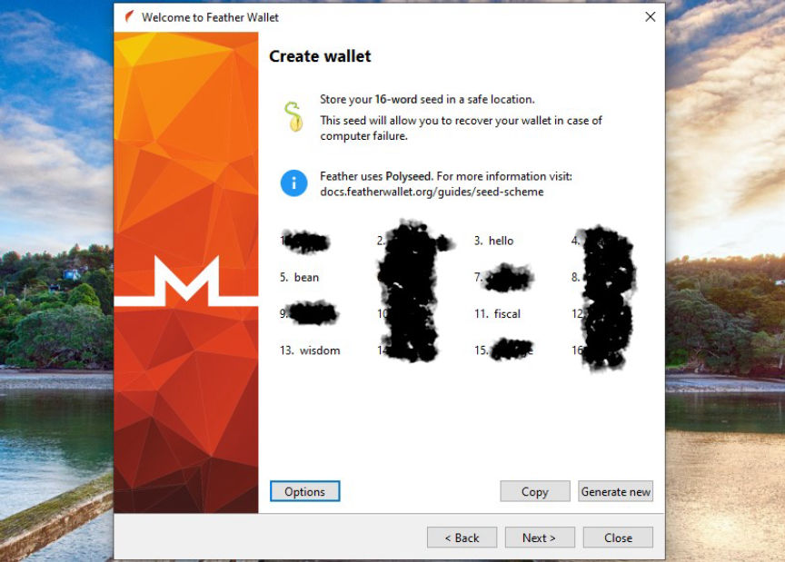
Click on Next, and confirm that you understand you're not supposed to disclose or lose your seed phrase.
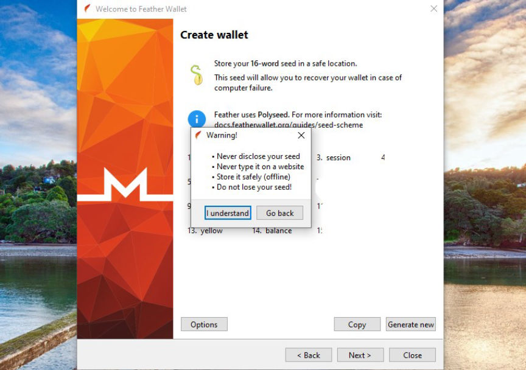
After clicking on Next, you will be asked to choose where you want your wallet to be stored. After confirming the location click on Next.
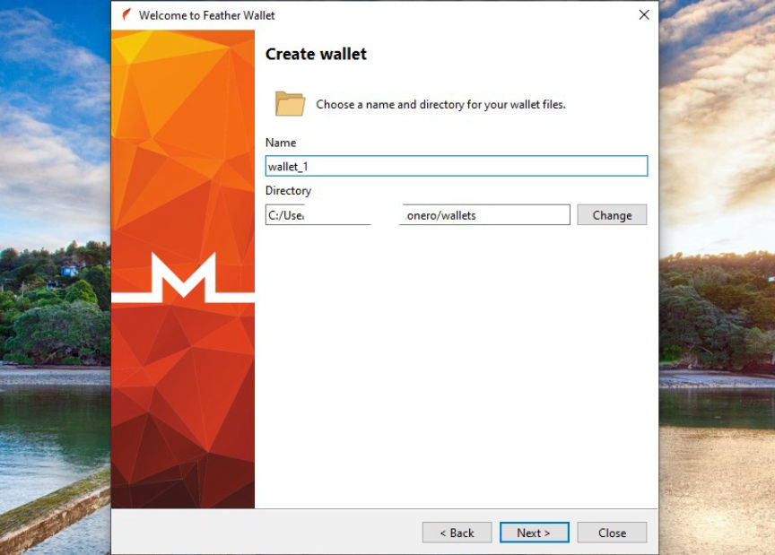
Enter a strong password you do not use elsewhere to encrypt your wallet keys. You'll need to enter the password every time you open the wallet.
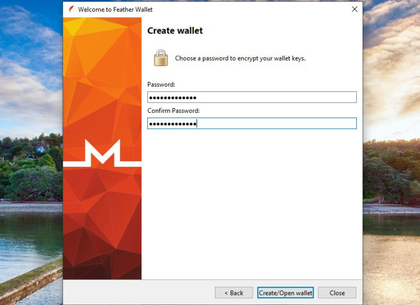
After you're done click Create/open Wallet.
If you desire to change the appearance of your wallet go to file select settings followed by Appearance.
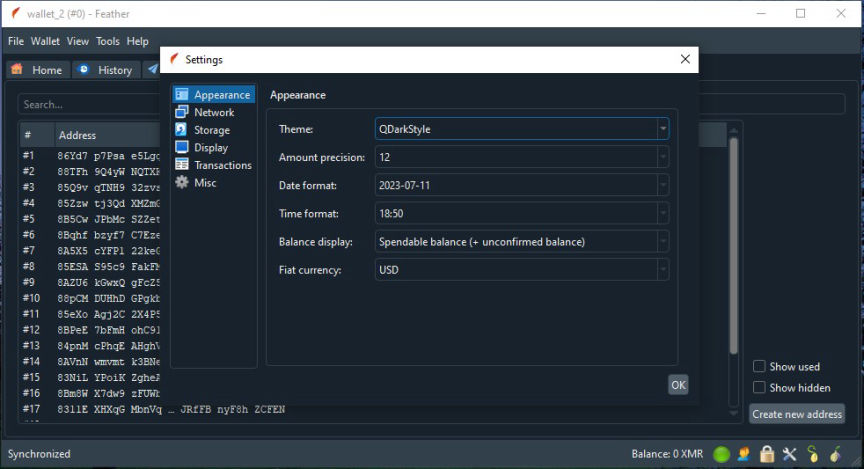
Here, you can modify any of the default settings to your preferred settings.
To change how Feather connects to ToR click on Network followed by Proxy.
Click on the Receive tab to reveal a list of your receiving addresses.
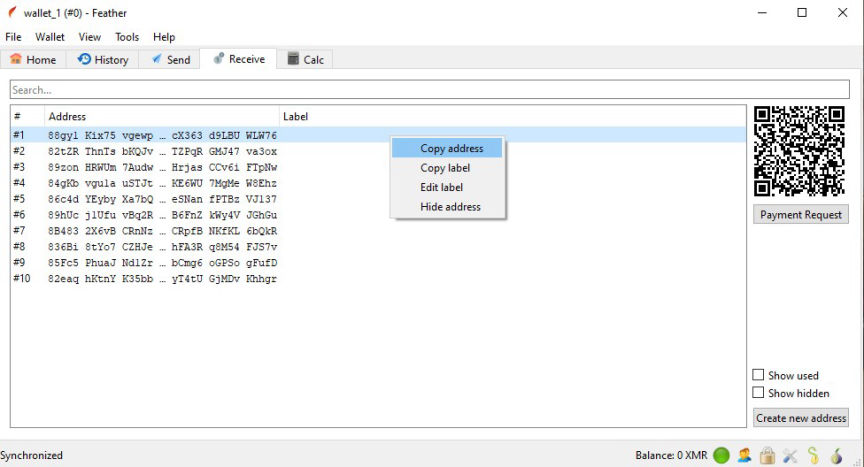
Right-click on one of the addresses, copy it and share it with the sender or use it to withdraw from an exchange. To prevent address re-use the wallet by default hides addresses that you have used to receive funds.
To send funds, click on the Send tab. Here you can paste the recipient's address and the amount you want to send and click on send to confirm the transaction details. You can also click on the Scan button to scan a QR code with the address that you want to transfer funds to.
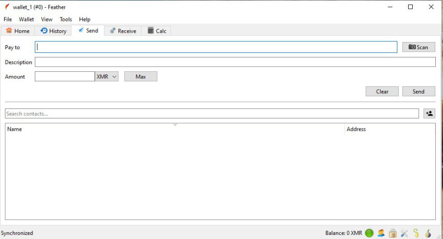
To send funds to more than one recipient, enter the list of addresses and their respective amounts in the Pay to field.
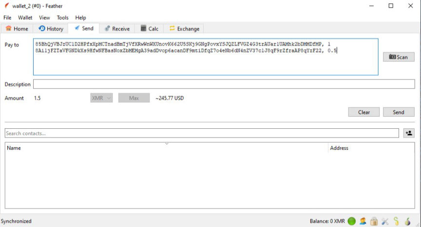
It is important to remember that as a lightweight wallet, Feather connects to Remote nodes by default. These nodes do not have access to any of your transaction details but could associate your outgoing transactions with your IP address if you choose not to route your traffic through ToR.
To get the most out of Monero's privacy features you should use Feather with privacy-focused operating systems such as Tails, which route all network connections through ToR. You should also not reuse your receiving addresses.
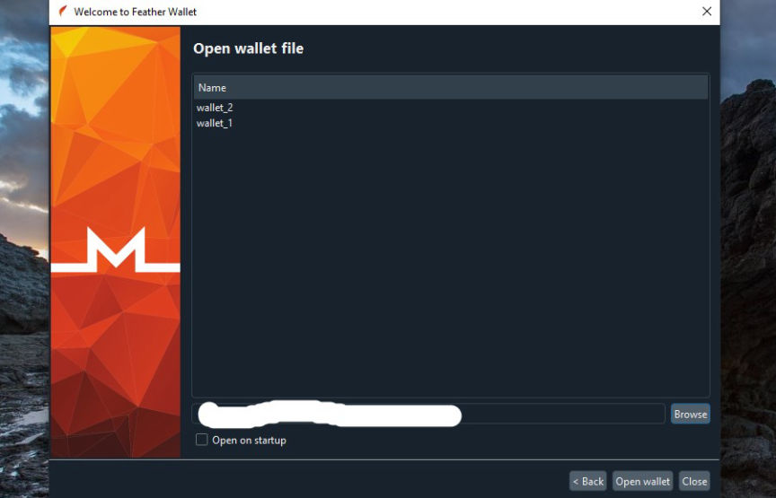
Feather wallet is lightweight and has an easy-to-use layout making it suitable for both beginners and advanced Monero users. Its ease of use makes it the go-to wallet for everyday Monero users.
Some of its features include;
- Support for hardware wallets including, Ledger Nano S, Ledger Nano S+, Ledger Nano X, and Trezor Model T.
- Send payments to many. The wallet allows you to send to as many as 16 addresses in a single transaction.
- Tor support. By default, Feather Wallet routes network connections through ToR with the exception of wallet synchronization. For Tails and Whonix users, everything goes through Tor.
- Address re-use prevention. By default, Feather hides addresses that have been used to receive funds.
Download the Wallet File
Go to the official download page and download the file of your choice.
Verify your Download and Install
This is an optional step but a necessary one for extra security.
Go here and copy the PGP key, and paste it into the Notepad of your Kleopatra. Next, Click on Import Notepad. Certify the PGP key and make sure the fingerprint matches: 8185 E158 A333 30C7 FD61 BC0D 1F76 E155 CEFB A71C.
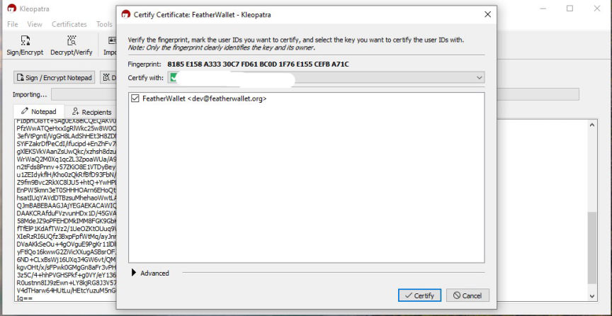
Import and certify the PGP key
You need to go back to Feather's download page and download the signature of the file you downloaded. Double-click on the signature file after the download completes.
A new window will open on Kleoptra and will confirm whether the signature is valid or not.
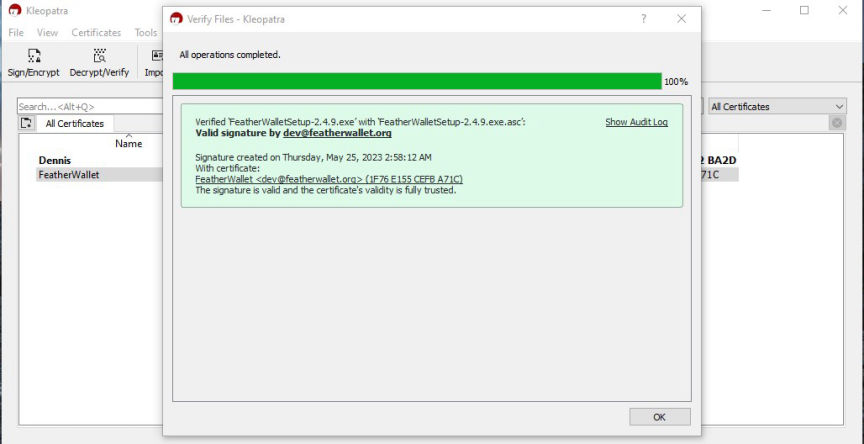
Verified signature
Install the wallet if the signature is valid.
Create your Wallet
After installing the application, open it, select Create new wallet and click Next.
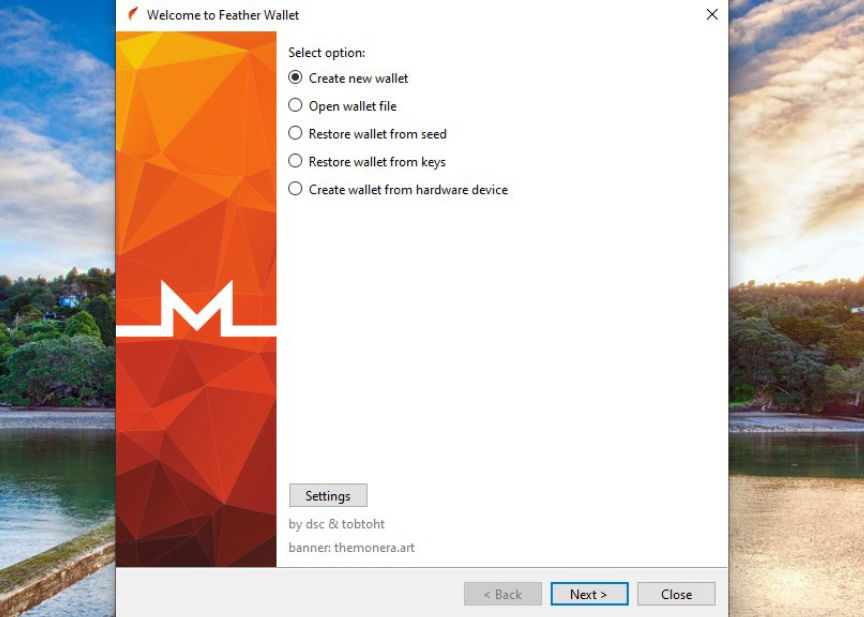
start creating your wallet
You will be taken to a page that displays the seed phrase for your new wallet. Since this is the only way you can recover your wallet, write the recovery phrase down, confirm the words are in the right order, and store it safely.
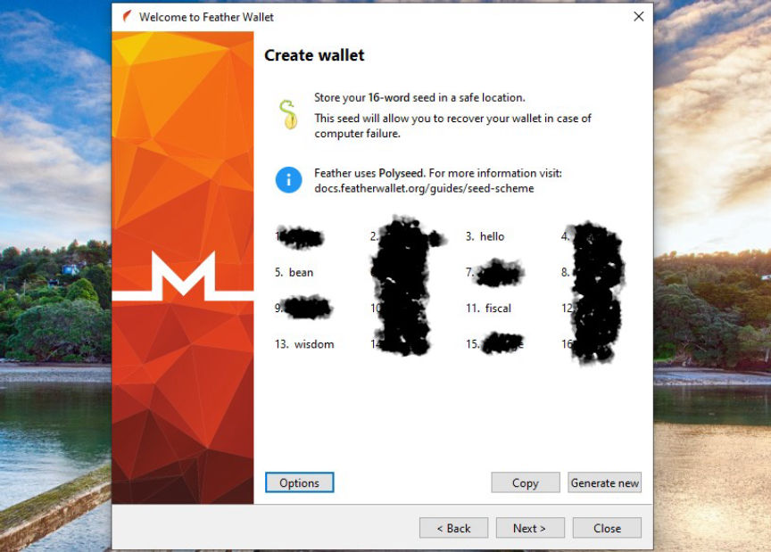
Store your seed phrase in a safe place
Click on Next, and confirm that you understand you're not supposed to disclose or lose your seed phrase.
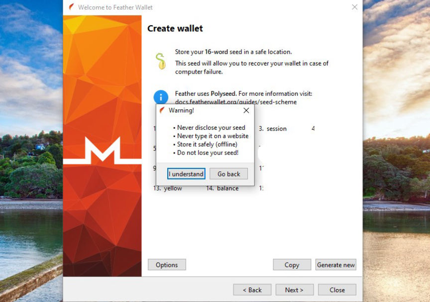
Confirm and proceed
After clicking on Next, you will be asked to choose where you want your wallet to be stored. After confirming the location click on Next.
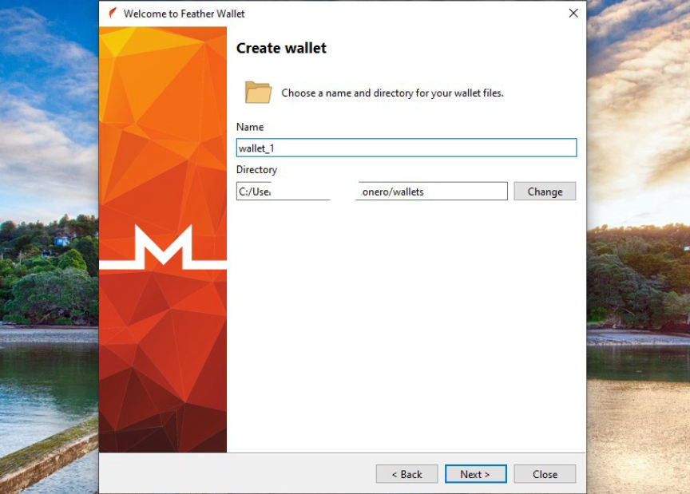
Select your wallet's location
Enter a strong password you do not use elsewhere to encrypt your wallet keys. You'll need to enter the password every time you open the wallet.
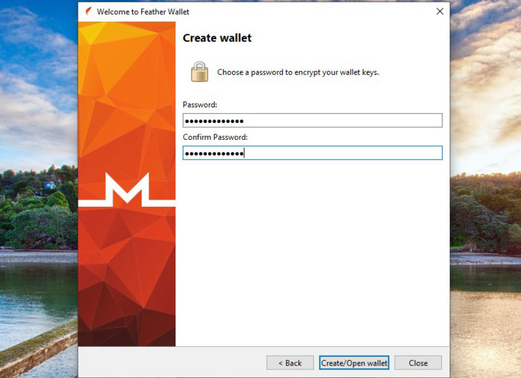
Enter your Password
After you're done click Create/open Wallet.
Configure your Wallet
If you desire to change the appearance of your wallet go to file select settings followed by Appearance.
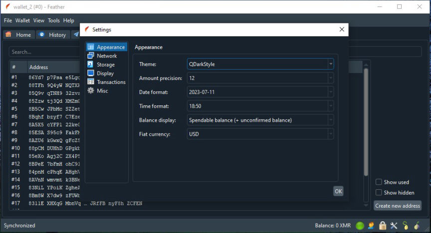
Change the appearance of your wallet
Here, you can modify any of the default settings to your preferred settings.
To change how Feather connects to ToR click on Network followed by Proxy.
Receive Monero
Click on the Receive tab to reveal a list of your receiving addresses.
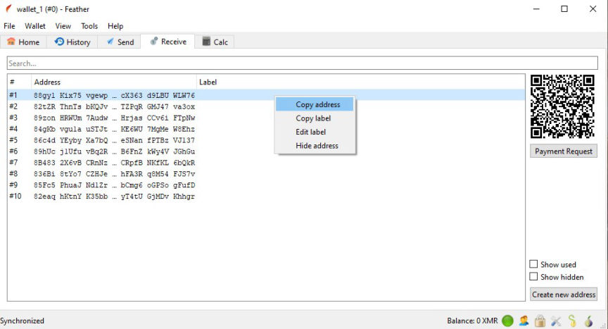
select a receiving address
Right-click on one of the addresses, copy it and share it with the sender or use it to withdraw from an exchange. To prevent address re-use the wallet by default hides addresses that you have used to receive funds.
Send Monero
To send funds, click on the Send tab. Here you can paste the recipient's address and the amount you want to send and click on send to confirm the transaction details. You can also click on the Scan button to scan a QR code with the address that you want to transfer funds to.
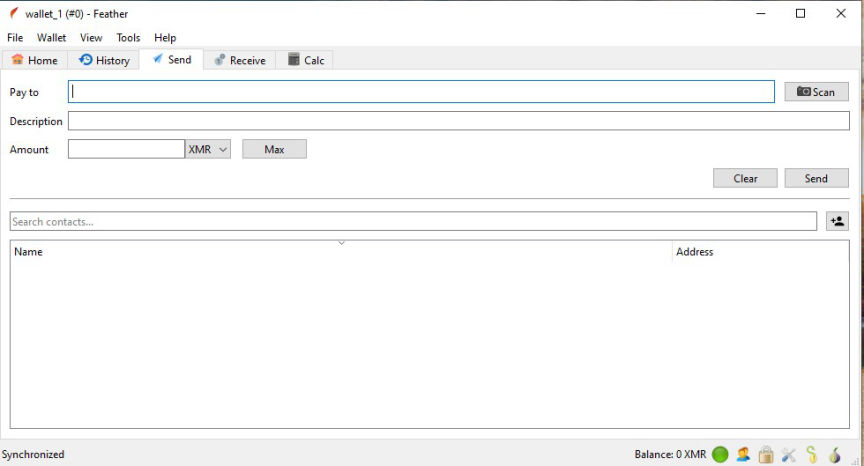
Send Monero
To send funds to more than one recipient, enter the list of addresses and their respective amounts in the Pay to field.
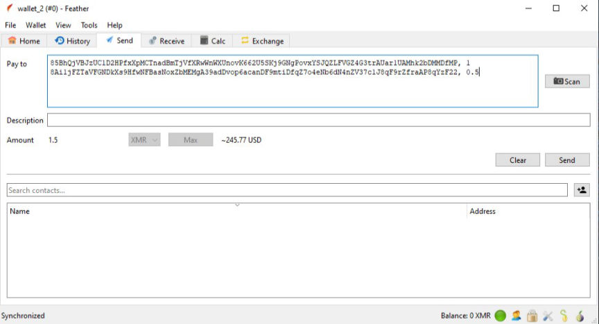
send to many
It is important to remember that as a lightweight wallet, Feather connects to Remote nodes by default. These nodes do not have access to any of your transaction details but could associate your outgoing transactions with your IP address if you choose not to route your traffic through ToR.
To get the most out of Monero's privacy features you should use Feather with privacy-focused operating systems such as Tails, which route all network connections through ToR. You should also not reuse your receiving addresses.